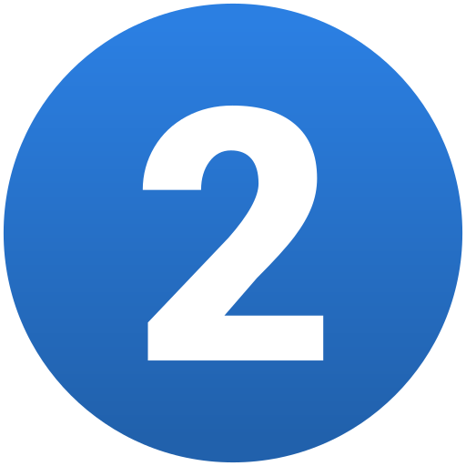
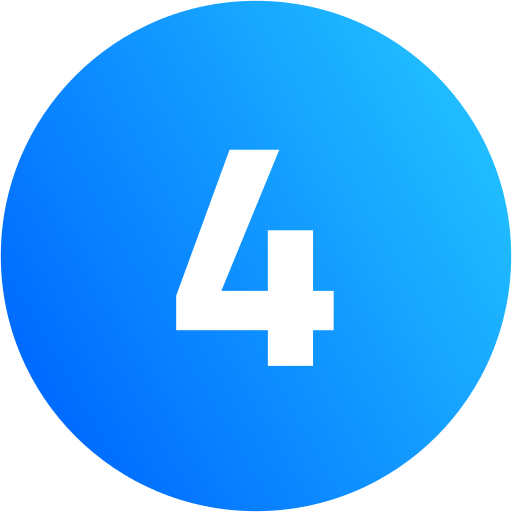

Conclui meu Ensino Médio em 2024, na escola Maura Abaurre. Atualmente estou cursando Sistema de Infomação na UVV.
Atualmente eu trabalho como ajudante de confeiteiro em uma padaria, mas pretendo sair assim que conseguir um estágio no mercado de trabalho nessa área que estou cursando.
Me interesso por diversas coisas, como jogar videogame, futebol, músicas, filmes, e moda. Meu estilo músical é bem diversificado, porém gosto mais de rap, mais especificamente trap, artístas como, Aka Rasta, Luangelus, Mavyrmldy, Nettspend, entre outros.
Minha música favorita atualmente:
Na primeira página há um pouco sobre mim, o que eu gosto e meus planos futuros.
Já nessa segunda página estarei mostrando meu currículo e competências

Na terceira página estarei mostrando o valor médio de diferentes tipos de páginas
Nessa quarta página esta o formulário para contato sobre a página 3

Nessa página irei deixar meu repositório do GitHub, com o link de redirecionamento para ele.